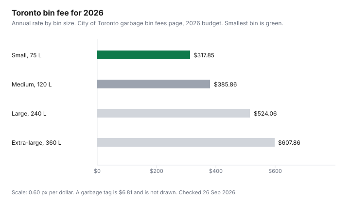

Household Items and Supplies · Canada
Garbage Bags, Compost Liners, and Bag Tags in Canada: Cut the Cost Without Breaking Collection Rules
A scented 30-gallon box can be the wrong product twice: the bag is larger than the kitchen can, and the city may charge for the garbage that bag is trying to hold. The cheap move is two checks. First, cents per bag from a tag you can divide. Second, the rule on your municipality's own page, because Toronto, Ottawa, Calgary, Halifax, and Vancouver do not share one liner rule. If your city is not in the table, the table is an example, not your bylaw.
Unit price on paper goods is the same method as the toilet-paper sheet count. Store brands that were not verified, including some bag rows, are named as gaps on the store-brand guide. Food that never reaches the bin is the food-waste guide.
Key takeaways
- Costco East, 10 Jun 2026: Kirkland kitchen drawstring bags, 200 at $25.99, are 13.00 cents each. Drum liners, 60 at $21.99, are 36.65 cents. Sizes are not interchangeable.
- Glad, Great Value, and Dollarama bag prices did not load. They are not in the table.
- Toronto 2026: small bin $317.85 a year, extra-large $607.86, garbage tag $6.81. Green-bin liners can be any plastic or paper. Compostable bags are not required.
- Vancouver and Halifax reject plastic in the organics cart, including bags labelled compostable. Calgary wants certified compostable bags for food scraps and for pet waste.
- Ottawa's extra garbage, above three items, goes in a city yellow bag. The yellow-bag page says four bags for $17.60, effective 1 Jan 2025.
Price per bag: Glad, Kirkland, Great Value, and Dollarama compared
Glad, Great Value, and Dollarama did not return a pack price and a count on a page opened 26 Sep 2026. Comparing them would mean inventing a tag. The rows that did load are Kirkland and two compostable lines on the Costco East list posted 10 Jun 2026. Cents per bag are the price divided by the count. They are not cents per litre, because the list does not print a volume for every line. A 6.87-cent home-and-office bag is not automatically a better kitchen bag than a 13-cent drawstring. It is a cheaper unit of whatever size that pack is.
| Product on the list | Count | Price | Cents per bag |
|---|---|---|---|
| Kirkland Signature home and office bags | 320 | $21.99 | 6.87 |
| BioSak compostable liner bags | 125 | $11.99 | 9.59 |
| Kirkland Signature drawstring kitchen bags | 200 | $25.99 | 13.00 |
| Kirkland Signature large garbage bags | 100 | $14.99 | 14.99 |
| Kirkland Signature clear garbage bags | 60 | $12.99 | 21.65 |
| Kirkland Signature Flex-Tech drawstring | 90 | $22.99 | 25.54 |
| Hytrend compostable paper bags | 50 | $13.99 | 27.98 |
| Kirkland Signature industrial drum liners | 60 | $21.99 | 36.65 |
Bin size and bag-tag fees: how Canadian municipalities charge for extra garbage
The bag is the small number. The city's container fee is the large one. Toronto's garbage bin page, with 2026 fees approved in the budget, charges by bin size: small, 75 litres, about one regular bag, $317.85 a year; medium, 120 litres, $385.86; large, 240 litres, $524.06; extra-large, 360 litres, $607.86. Upsizing costs $29.29. Downsizing has no fee on that page. A garbage tag for excess, bought online or at Toronto Canadian Tire stores, is $6.81. Bag-only collection is $203.50 a year and still needs a tag on every bag, and the page says it requires special approval. The bin program is otherwise mandatory for curbside customers.
Ottawa's curbside page describes a three-item garbage limit. Anything above that must be in a city yellow bag or it is not collected. The yellow-bag page says bags are sold in packages of four for $17.60, and the business section of that page says the price is effective 1 Jan 2025. Four into $17.60 is $4.40 a bag. Green bins are not part of the three-item cap. Calgary's 2026 cart fees, per 30 days, are $7.71 for the black cart, $2.17 for the blue cart, and $10.63 for the green cart, $20.51 together. The rates page says smaller carts and opt-outs are not available. An additional cart is charged at the same rate, with a six-month commitment on the additional-cart page. There is no per-bag tag in those Calgary pages. Halifax's garbage page allows a single-unit home up to six bags a collection, one dark privacy bag and the rest clear, each no more than 25 kg. That is a limit, not a tag price. Vancouver's garbage page says extra bags need an extra-garbage sticker and that an overflowing bin may not be collected. The sticker's price was not in the text retrieved, because the full garbage page was blocked on a direct fetch. Do not treat a missing sticker price as zero.
| City | What you pay for garbage volume | Green-bin or green-cart liner |
|---|---|---|
| Toronto | 2026 bin fee $317.85 to $607.86 a year by size. Tag $6.81 for excess. | Any plastic or paper bag in the kitchen catcher or the outdoor bin, not both. Compostable bags are not necessary. Compostable plastic containers and cutlery go in the garbage. |
| Ottawa | Three garbage items included. Yellow bags $17.60 for four ($4.40), price stated as effective 1 Jan 2025. | Liner rule was not in the curbside or yellow-bag text retrieved. Open the green-bin page before you buy liners. |
| Calgary | 2026 black cart $7.71 per 30 days. No smaller cart. Extra cart at the same rate. | Certified compostable bags may hold food scraps. Pet waste must be in a certified compostable bag or a paper bag. A standards-body explainer was not opened. |
| Halifax | Up to six bags a collection for a single unit. One may be a dark privacy bag. No tag price on the page. | No plastic bags, including products labelled compostable or biodegradable. Carts that contain that plastic are not collected. |
| Vancouver | Extra bags need a sticker. Sticker price not in the text retrieved. | No plastic bags, including bags labelled compostable or biodegradable. Paper bags and newspaper are accepted for lining or wrapping. |

Green-bin liners: which cities require certified compostable bags vs allow paper or none
Buying a "compostable" box and using it everywhere is how a liner becomes garbage. Toronto's green-bin page says you may line the kitchen catcher or the outdoor bin, not both, with any plastic bag, including a grocery or produce bag, or a paper bag. It says compostable plastic bags are not necessary. The city uses anaerobic digestion, and it says anything that behaves like a plastic, including bio-based plastics, is removed and sent to landfill. Compostable containers, cups, and cutlery are not accepted in the green bin.
Vancouver's green-bin page says not to use plastic bags, even those labelled biodegradable or compostable, because plastic is a contamination risk and is not accepted by the processor. Paper bags and newspaper are listed as accepted for lining or wrapping food scraps. Halifax's green-cart page says no plastic bags and no products labelled compostable or biodegradable, and that a cart containing that plastic will not be collected. Calgary's green-cart page says you can use certified compostable bags for food scraps, and that pet waste, kitty litter, and cold ashes must be in a certified compostable bag or a paper bag. The cart guide says ordinary plastic bags do not break down and contaminate the compost. A BNQ or CMA certification page did not load on 26 Sep 2026, so this guide will not explain the test behind the logo. Use the word the city used. In Calgary that word is certified. In Toronto, Vancouver, and Halifax, a certified plastic bag is still the wrong liner.
Right-size your bags: stop buying 30-gallon bags for kitchen cans
A drum liner at 36.65 cents is a rational buy for a container that needs a drum liner. It is an expensive buy for a 10-litre kitchen can, if that is the can you have. This list did not print gallons, so the warning is the method: read the package dimensions, measure the can, and do not inherit a 30-gallon habit from a previous house. Halifax's own bag rule is a length when empty of 0.5 to 1 metre. Toronto's excess bag, on a 2026 collection schedule retrieved with the city pages, is described as a regular size of 66 cm by 91 cm. Those are collection limits, not a suggestion to buy the biggest retail box.
Clear bags matter where the city asks for them. Halifax wants clear bags, with one dark privacy bag allowed for a single unit. A tinted "kitchen" bag that fails that colour rule is a bag you paid for and a collection you missed. Kirkland clear bags on the list are 21.65 cents. Whether they meet Halifax's thickness and colour rules is a package check, not something the Costco line stated.
Reduce volume first: recycling and organics diversion that shrinks paid garbage
The tag and the larger bin are prices for material that could have gone elsewhere. Toronto's fee already includes unlimited organics collection, and excess garbage beyond the closed lid needs the $6.81 tag. Putting food in the garbage bin and then buying the extra-large bin is paying $607.86 to avoid a liner rule you can follow for free with a grocery bag. Ottawa does not count green bins toward the three items. Filling the green bin is how you stay inside the free items. Calgary bills the green cart whether it is full or empty, at $10.63 per 30 days in 2026, so the financial lever is not skipping organics. It is not ordering a second black cart at another $7.71. Food you do not buy, or that you eat before it spoils, never enters either cart. That is the grocery waste guide, not a second bag brand.
Checklist: find your municipality's rules before buying
Before the next box of liners, open the city's page and write four lines. What container is included in the fee. What extra garbage costs, as a tag, a yellow bag, a sticker, or a bag limit. Whether plastic, certified compostable plastic, paper, or nothing may touch the organics. Whether bags must be clear. If the page is silent, as Ottawa's liner rule was in the text retrieved here, do not fill the silence with Toronto's rule. Apartments often use a different contract than curbside houses. The Costco aisle is allowed to sell a compostable box that your processor will not take. The city page outranks the box.
Sources & date stamps
- Costco East cleaning list, posted 10 Jun 2026, opened 26 Sep 2026: Kirkland home and office bags 320 at $21.99; BioSak compostable liners 125 at $11.99; Kirkland drawstring kitchen bags 200 at $25.99; Kirkland large garbage bags 100 at $14.99; Kirkland clear bags 60 at $12.99; Kirkland Flex-Tech drawstring 90 at $22.99; Hytrend compostable paper bags 50 at $13.99; Kirkland industrial drum liners 60 at $21.99.
- City of Toronto garbage bin sizes and fees, and green-bin page, opened 26 Sep 2026: 2026 rates $317.85, $385.86, $524.06, $607.86; tag $6.81; any plastic or paper liner; compostable bags not necessary.
- City of Ottawa yellow-bag page and curbside garbage page, text retrieved 26 Sep 2026: four yellow bags for $17.60, effective 1 Jan 2025 on the yellow-bag page; three-item garbage limit.
- City of Calgary residential waste rates and green-cart page, opened 26 Sep 2026: 2026 fees $7.71, $2.17, $10.63 per 30 days; certified compostable bags for food scraps; pet waste in a certified compostable bag or paper.
- Halifax garbage collection and green-cart pages, text retrieved 26 Sep 2026: six-bag limit, one dark privacy bag; no plastic including compostable plastic in the green cart.
- City of Vancouver green-bin page, text retrieved 26 Sep 2026: no plastic bags, including compostable or biodegradable; paper bags and newspaper accepted. Extra-sticker price not retrieved.
Frequently asked questions
How much does a garbage bag really cost per use?
Divide the pack price by the count, then check that the bag fits the can. On the Costco East list posted 10 Jun 2026, Kirkland drawstring kitchen bags were 200 for $25.99, which is 13.00 cents a bag. Kirkland large bags were 100 for $14.99, which is 14.99 cents. Home and office bags were 320 for $21.99, 6.87 cents, and they are not the same size as a drum liner at 36.65 cents. Glad, Great Value, and Dollarama prices did not load.
What is a bag tag and how much does it cost?
It is a fee for garbage beyond the container your city already charges for. Toronto's 2026 garbage tag is $6.81. The small bin is $317.85 a year and the extra-large is $607.86. Ottawa sells city yellow bags at $17.60 for four, which is $4.40 a bag, for garbage above the three-item limit. Calgary does not use a per-bag tag on the rates page opened; the 2026 black-cart fee is $7.71 per 30 days. Your city may be none of these. Open its page.
Which compost bags can I use in my green bin?
It depends on the city, and the cities opened here do not agree. Toronto says any plastic or paper bag is fine for the kitchen catcher or the green bin, not both, and that compostable plastic bags are not necessary. Vancouver says no plastic bags at all, including bags labelled compostable or biodegradable; paper and newspaper are accepted. Halifax says green carts that contain plastic, including compostable plastic, will not be collected. Calgary allows certified compostable bags for food scraps and requires them, or a paper bag, for pet waste. A BNQ or CMA explainer page did not load, so this guide does not decode the logo beyond the city's own word "certified."
What size garbage bag do I need for a kitchen can?
Measure the can. The Costco list names "kitchen," "large," "home and office," and "drum liners" without printing a gallon count, so a 30-gallon habit is not a size this list proved. A kitchen can that holds one grocery bag does not need a drum liner. If the bag is wider than the can, you are buying plastic you fold over and throw out. Match litres or the package's stated dimensions to the can you own.
How can I cut paid garbage volume?
Move food and recycling out of the paid container before you buy a bigger bin. Toronto charges more per year as the garbage bin gets larger, and the green bin is in the fee rather than an extra tag. Ottawa's three items are garbage only; green bins are not in that limit. Calgary's green cart is $10.63 per 30 days in 2026 whether you fill it or not, so the saving is landfill volume and a black cart you do not need to add, not a lower green-cart line. Food that never becomes waste is the grocery guide.